I went to bed later than normal last night.
I was up late reading “One Hundred Years of Solitude” and couldn’t put it down.
So this morning I had hard time getting up. By the time I departed it was 7 o’clock already.
Baoji city is in a rectangular shape. So I will ride from east to west to across the whole city today.
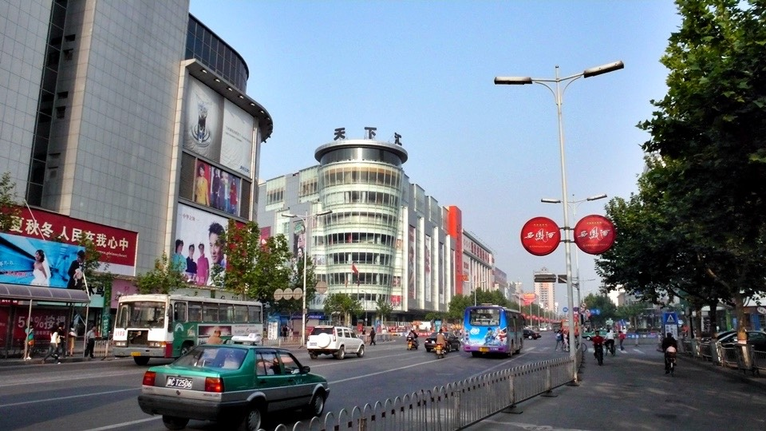
About 8 o’clock, just as I was leaving Baoji, I heard a very familiar music broadcasted from a loudspeaker.
“Stretching exercises, 1, 2, 3, 4 … “ Isn’t that the national exercise routines that we had to do in the elementary school?
Even the music and commands were exactly the same! I stopped and watched the students doing the same exercise
routines as I did when I was in school. Oh, the good old days.
I turned around and looked up. When I saw the school name, it made me laugh so hard.
The name of this school is “Shaanxi Province Baoji Nitrogen Fertilizer Factory Children School” :-)
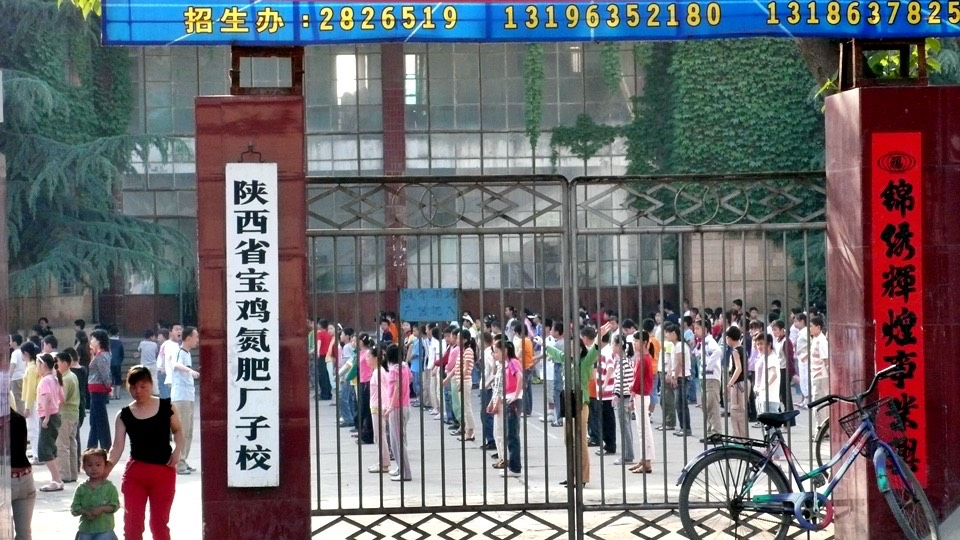
While I was looking for the road to Tianshui, I accidentally climbed up a hill.
But that is ok because I will have to climb many hills today and one more hill is not going to hurt.
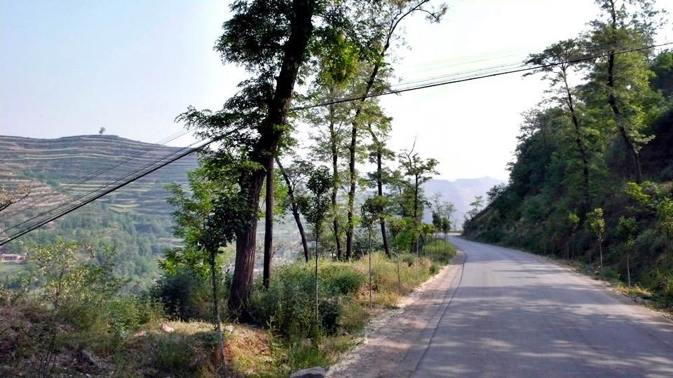
The roads from Baoji to Tianshui were between valleys so there were less climbing up and down the mountains.
But occasionally I still had to climb up and down the mountains.
Today is the first time that I have to go through a tunnel.
I was worry that my GPS wouldn’t be able to receive signals while I was in the tunnel and it would mess up the track.
I stopped after passed through a tunnel and checked the GPS.
There was only a small section of track was messed up. Overall, it was pretty precise.
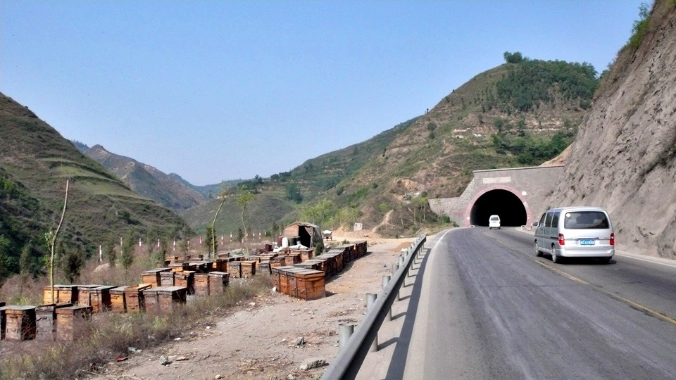
The tunnels here were pretty scary. They were all 1 – 2 km long. Some were a little bit longer.
But none of them had lights or they only had very dim yellow lights.
For cars, it might not matter because cars have head lights.
But for cyclists, this is the worst nightmare.
First of all, I was afraid that I might get tripped over because it was so dark inside the tunnel.
Second, I was afraid that I might get run over from cars behind me.
Before entering the tunnel, I took of the sun hat and changed my sunglasses to the regular glasses;otherwise I would be blind as a bat.
Then I changed the red taillight to blinking mode and turned on Dido’s headlight.
Luckily Dido has a petal powered generated lights.
I only have to turn on the switch and while I am riding the bike, it will generate enough electricity to keep the headlight on.
This way I don’t have to worry about running out of batteries and the halogen lamp was bright enough for me to see.
Good thing there weren’t that many cars here (there were more trucks though).
Traffic was pretty light, so it wasn’t that difficult to pass through the tunnels safely.
Throughout the day, I probability passed 6 or 7 tunnels.
Here is another first time. Right after I passed the first tunnel, I got my first flat tire.
Because of the construction, either the road condition was very bad or there was only a small path.
From the surface it shouldn’t be any problem. But you get a flat tire as soon as you get on the road.
It broke my heart when I saw the front wheel had a flat tire. I moved the bike to the side of the 15th branch.
I was looking for a shady spot to change the inner tube.
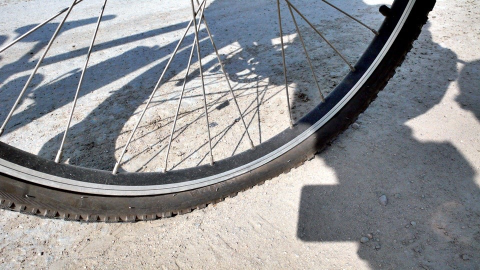
Unload the 3 bags at the front, disassemble the front wheel, took out tools and spare inner tube, now I am ready to change tire.
It has been a long time since I had to change the inner tube.
After the bike tour in France, I haven’t had any opportunity to change tire myself.
I almost forgot how to do this if it wasn’t for this time.
There were broken glasses that had poked through the outer tube and into the inner tube.
You can’t tell really from the surface. There were just very small holes.
In order to take out the broken glasses, I had to pried open the outer tube,
and then used a small tweezer to pull out the broken glasses one at a time.
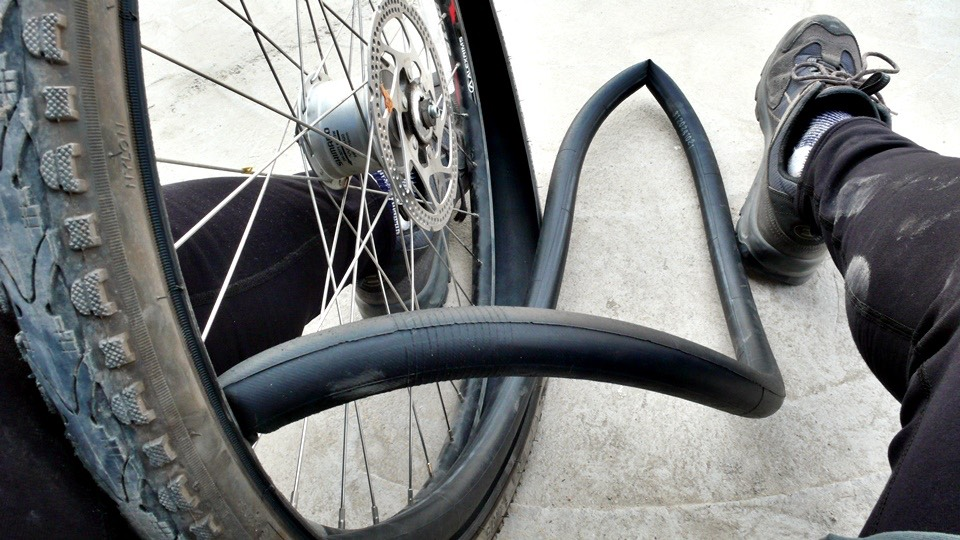
While I was changing the inner tube, people from the 15th branch came over and watched me getting flustered.
The 15th branch is the unit that is in charge of the construction here.
I told them that I had a flat tire while I was riding on the path in front of us.
“The road condition is very bad and please fix them.”
The highway they are working on right now is called Bao Tian Highway, which is from Baoji to Tianshui.
The construction will finish next year, in the mean time, this impacts a lot of national freeways and the road condition becomes very bad.
I took me about half hour to fix the flat tire while chitchatting with the workers from the 15th branch.
Before I left, I asked them to fill my water bottles.
Today again is a bright sunny day. I have been wearing the sun hat since this morning.
I drank a lot of water and got all sweaty.
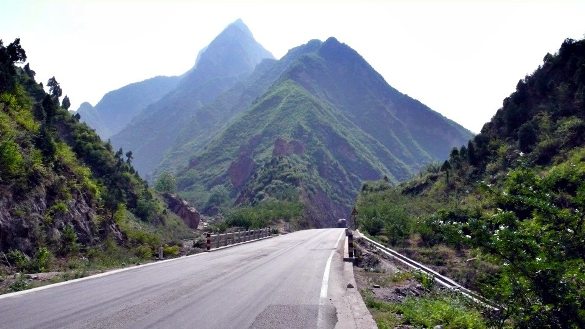
Riding along the valleys, obviously there were less roadside shops and fewer towns.
There were only a few restaurants and body shops open along the roadway.
Lunch time, I stopped at a small restaurant and order half kilogram of dumplings. This time, there were 30 dumplings :-)
During lunch time, I found out that the owner is one of the construction workers.
This is a very difficult construction. In order to build highway as straight as possible,
they have to build bridges to cross rivers and tunnels through mountains.
I don’t know when they will be able to finish the construction.
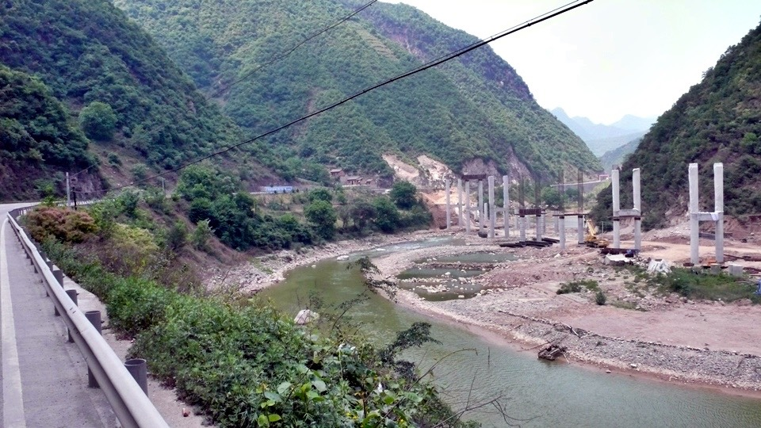
While I was eating dumplings, there was a loud sound, “BOOM!”
It scared me to death, but the owner seemed like didn’t even hear that. I asked him what was that?
Come to find out, they were blowing up the mountain to build tunnels.
What? I had to ride along the construction site and they were using the explosives. Is it dangerous?
Oh, don’t worry about it,” the owner said casually while smoking.
But the sound of explosion was still lingering in the valley.
Not long after the lunch time, I have passed through the border between Shaanxi and Gansu provinces.
Just a plain road sign indicated I have finished another province.
The distance to Tianshui is about 180 kilometers.
I didn’t want to make it too aggressive so I am going to make it a 2-day trip.
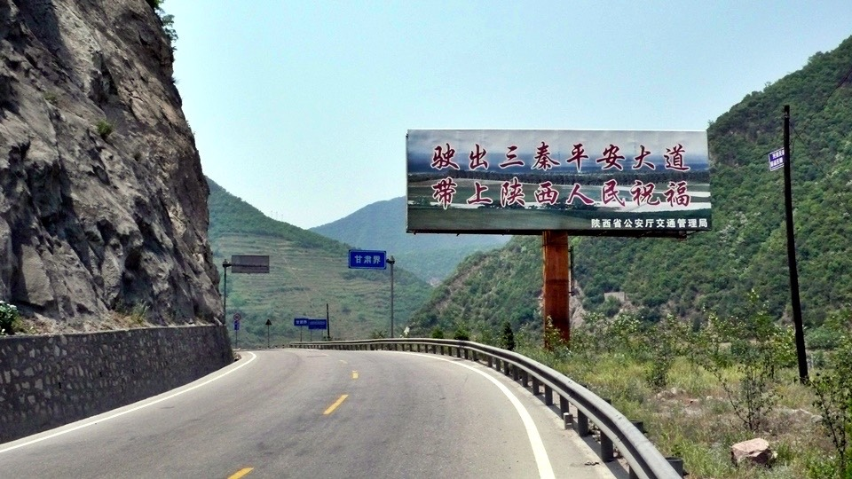
After arrive Gansu and rode a little bit more, I can start looking for a place to stay over night around 3 – 4 o’clock in the afternoon.
I want to get plenty of rest so I can continue to ride tomorrow.
3:30 in the afternoon, I decided to stay at a roadside hotel.
This hotel is owned by a couple and their son.
The name of this town is called “Dizhuang”. What a simple name.
I don’t think I will need to use the tent in China because there are lodging places everywhere.
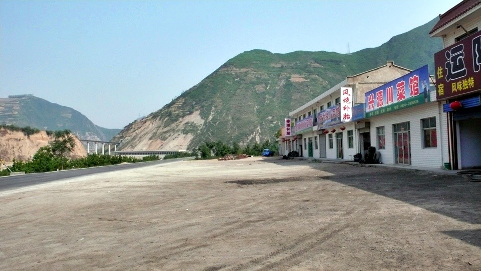
It was only 10 RMB a night here and there was a nice breeze at the front door.
I got a bucket of cold water from the well, had a sponge bath and then rinsed the outfit I was wearing earlier.
Took the clothes the roof, grandma gave me bamboo pole to line dry my clothes.
Today the sun is very bright with strong wind. My clothes were dried in an hour.
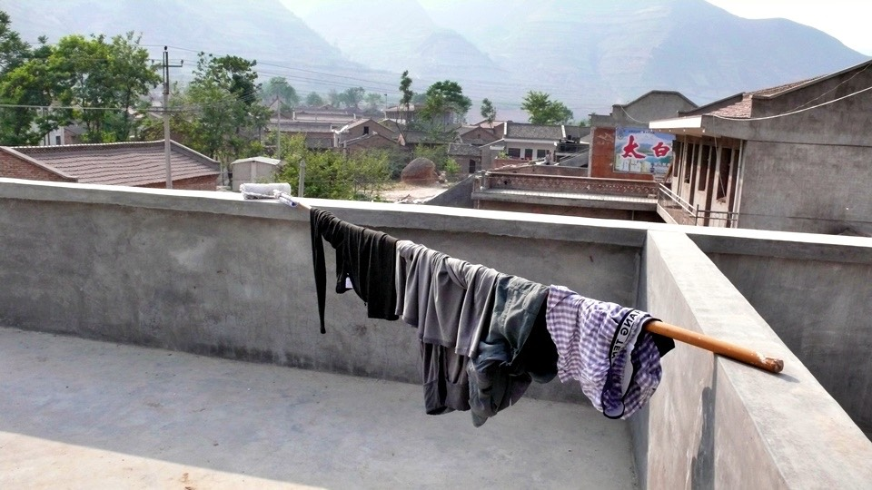
I ordered a bowl of braised noodle and I thought the grandma would be the one who cooked.
But ended up it was the son.
It was surprisingly delicious. There were green peppers, cabbages, bean curds, tomatoes and shredded pork with hand-made noodle.
The soup was spicy with a touch of sweet and sour, not greasy at all.
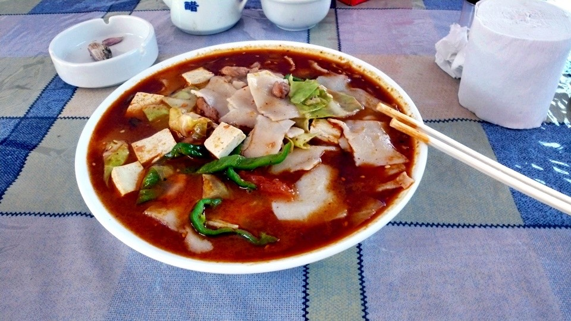
The owner’s son learned how to cook in Baoji. He had also a year of experience at a restaurant in Beijing.
That’s why his cooking was super delicious. I complimented him about his cooking. He was very humble and said,
“No, the taste is not quite there, yet.”
I pulled a stood and sit at the front door just like them. The wind was blowing.
At this moment, it didn’t matter whether the wind was blowing with me or against me as long as it was a breeze.
I drank the cold beer that the owner had put in the refrigerator for me earlier while enjoyed the beautiful mountain view.
When I was riding, I had to pay attention for the road condition.
If I wanted to enjoy the view, I had to either stop the bike or fall off the bike.
Here is the view from the back of the house. You can climb these mountains. It must be very beautiful up there.
The little house in the lower left hand corner is the bathroom. The smell was very strong.
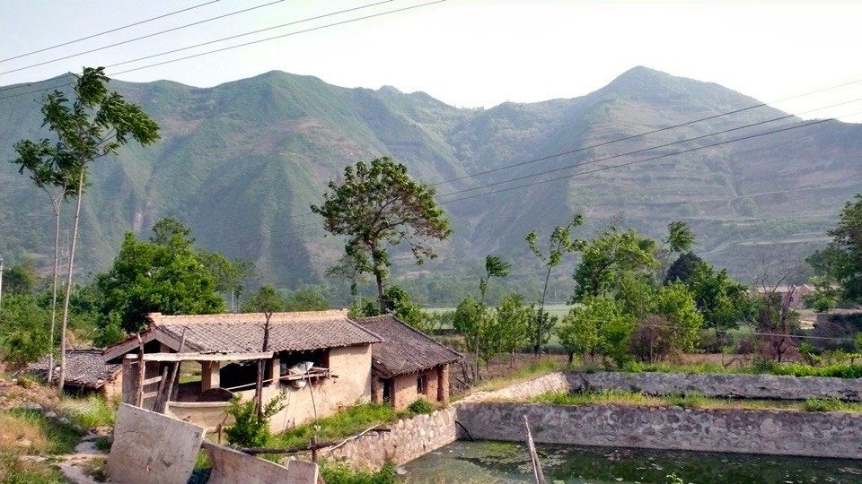
After finished one bottle of beer, I asked the owner to put another one in the refrigerator.
Later, I will ask the son to cook something delicious to go with the beer (mouth watering)